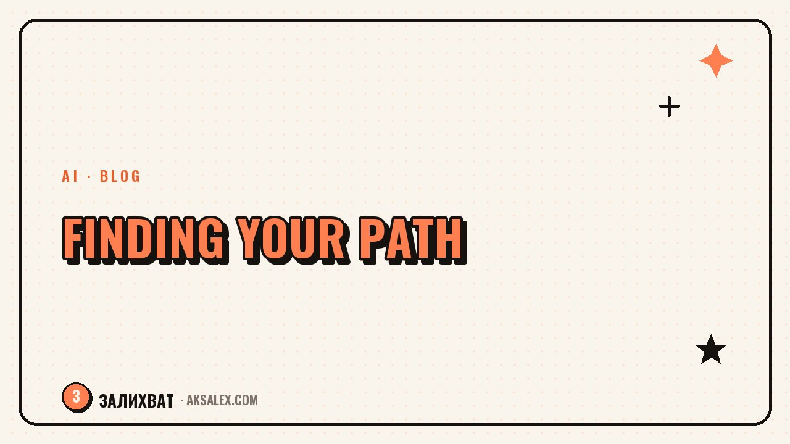

How to Find Yourself and Figure Out What to Do

Why "find yourself" is a bad way to put it
The phrase makes it sound like a finished answer is hidden somewhere inside you, waiting to be dug up so everything falls into place. In practice it does not work that way: interests and abilities take shape through action, they do not sit ready and wait for their moment. People rarely "find" a calling - they try different things, notice what resonates, and gradually piece together their own path from that.
So it is more productive to replace "who am I really" with something narrower: "which of the things I have done gave me energy, and which drained it." That is not a philosophical question but a practical one you can answer with concrete examples from your life rather than abstractions.
Three questions instead of one big one
- Which tasks do I do quickly and without resistance, even when I am tired
- After which do I feel a "good" tiredness, and after which - emptiness
- What can I talk about for a long time with interest, losing track of time
Where to start if nothing is clear at all
If it feels like you have no interests at all, the issue is usually not that they are absent, but that they have gone unnoticed and unnamed. Start by reviewing your own life over the past few years: work, studies, hobbies, even random episodes like organizing a friend's move or running a neighborhood chat. Write each episode down in one line.
Then note next to each item: did you do it on your own initiative or because you had to, and how did it feel. Patterns usually show up at this stage already - for example, that you are comfortable where you have to explain complex things in simple words, or where there is clear structure and order.
It is also worth asking people who have known you a long time what they usually come to you for advice or help with. From the outside it is often easier to see what feels so natural to you that you do not register it as a separate skill.
How to test a hunch without quitting into nowhere
Changing what you do is frightening precisely because of the scale of the decision - it feels like you have to drop everything at once and dive in headfirst. But a hunch about a new direction can and should be tested in small steps while you stay at your current job: take on a small project in the new area, do a short course, talk to someone who already works the way you find interesting.
The point of such a test is not to fall in love with the idea for good, but to get your first real experience and see whether your picture of it matches reality. It often turns out that what appeals to you is not the whole profession but a specific part of it - and that already narrows the search and makes the next step clearer.
A useful marker: if the thought of a new pursuit does not fade after a month or two but instead grows concrete steps you actually want to take, that is a more reliable signal than a one-off burst of inspiration.
Small steps to test an idea
- Do one project in the new area as a hobby or side gig
- Take a short course or workshop rather than jumping into a big program
- Talk to someone who already works in that direction
- Set aside 2-3 hours a week to try it without changing your main job
What holds you back: comparing approaches to the search
There are different ways to approach the question of "what to do" - from waiting for a flash of insight to systematically testing hypotheses. Comparing them shows why some approaches stall while others gradually lead somewhere.
| Approach | The gist | Typical result |
|---|---|---|
| Waiting for a revelation | Looking for a moment of sudden clarity | Years of uncertainty with no movement |
| Comparing yourself to others | Taking your cues from other people's success stories | Anxiety and a sense of falling behind |
| Reviewing your own experience | Analyzing what has already given you energy | Clear directions to test |
| Small trial runs | Testing hypotheses in practice | Real data instead of guesses |
When to admit this takes longer than one evening
Finding your direction is not a task you close in one evening with a notebook, and you should not demand that of yourself. It is more realistic to treat it as a process of several months, alternating reflection with small actions, rather than a one-time decision after which everything instantly becomes clear.
If the anxiety over "not knowing what to do" seriously interferes with living and working for months, this is a case where it helps to talk not only to a notebook but to a therapist - working through it on your own helps with direction, but it does not replace support when your inner state is heavy.
Frequently Asked Questions
How do I find myself if it feels like I have no interests at all?
You most likely do have interests, they are just unnamed and unnoticed. Write down all your activities over the past few years, including random episodes, and mark which ones gave you energy - patterns usually show up at this stage already.
Do I have to quit right away to find my direction?
No, abrupt decisions raise anxiety and the risk of a mistake. It is better to test a hypothesis about a new direction in small steps - a side gig, a short course, or a conversation with someone in the field - while staying at your current job.
How long does finding yourself usually take?
It is a process of months, not one evening with a notebook. It is more realistic to expect gradual clarity through trial runs and reflection than a single moment after which everything instantly makes sense.
How do I know a new direction fits and is not just trendy right now?
A reliable signal is when the interest does not fade after a month or two but grows concrete steps you want to take. A one-off burst of inspiration usually dies down faster than a steady interest.
What if thoughts about meaning and purpose cause me a lot of anxiety?
Working through your own experience helps with direction, but it does not replace support when anxiety is severe. If your state interferes with living and working for a long time, it is worth seeing a therapist.
Enjoyed this one? Here's what to read next. Where AI genuinely saves a freelancer time: finding jobs, quoting, and negotiating with clients.
Read the article →not by hand